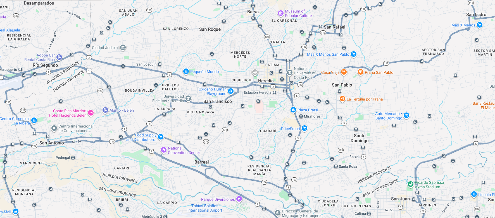

BusMap
Menu
Mapa
Perfil
Salir
Mapa
Buscar parada o ruta
Filtrar por tipo de incidente
Todos
Retraso
Avistamiento del bus
Accidente

Bus - Ruta 1
Bus - Ruta 3
Reporte
Reportar algo aqui
Nuevo reporte
Tipo de incidente
Seleccione...
Retraso
Avistamiento del bus
Accidente
Comentario
Enviar reporte
Reportes cercanos